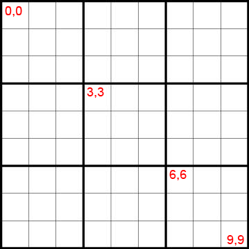

<canvas> is an HTML5 element used to draw graphics, on the fly, via scripting (usually JavaScript).
Source: http://www.w3schools.com/html/html5_canvas.asp
The <canvas> element has no drawing abilities of its own (it is only a container for graphics) - you must use a script to actually draw the graphics.
It can, for instance, be used to draw graphs, make photo compositions or do simple (and not so simple) animations.
<canvas> element has only two attributes - width and height.
These are both optional and can also be set using DOM properties. When no width and height attributes are specified, the canvas will initially be 300 pixels wide and 150 pixels high.
The element can be sized arbitrarily by CSS, but during rendering the image is scaled to fit its layout size.
Closing </canvas> is required by HTML5 standards.
Canvas can be styled by CSS, but the graphics inside the canvas will not be affected. Without any javascript, canvas is a transparent element.
Fallback content can be specified between opening <canvas> and closing </canvas>.
In order to draw graphics on the canvas, we need to use javascript getContext() method. This returns an object that provides methods and properties for drawing on the canvas.
getContext() method takes one parameter, the type of context. There can be "2d" or "webgl" contexts. This presentation focuses on the "2d" context.
ctx now has access to all the drawing methods.
The fallback content is displayed in browsers which do not support <canvas>. Scripts can also check for support programatically by simply testing for the presence of the getContext() method.
Canvas was first introduced by Apple for the Mac OS X Dashboard and later implemented in Safari and Google Chrome.
| Supported browsers | Unsupported browsers |
|---|---|
| Internet Explorer 9 | Internet Explorer 8 and earlier |
| Firefox | |
| Opera | |
| Chrome | |
| Safari | |
| Gecko 1.8-based browsers, such as Firefox 1.5 |
1 unit in the grid corresponds to 1 pixel on the canvas.
The top left corner corresponds to coordinate (0,0)). All elements are placed relative to this origin.

<canvas> only supports one primitive shape: rectangles. All other shapes must be created by combining one or more paths. We can use several path drawing functions which make it possible to compose very complex shapes. We can have linear paths, arcs and bezier curve paths.
There are three functions that draw rectangles on the canvas:
| fillRect(x, y, width, height) | Draws a filled rectangle. |
| strokeRect(x, y, width, height) | Draws a rectangular outline. |
| clearRect(x, y, width, height) | Clears the specified rectangular area, making it fully transparent. |
|
Each of these three functions takes the same parameters. All 3 functions draw a rectangle immediately on the canvas. |
|
The fillRect() function draws a large black square 100 pixels on each side. The clearRect() function then erases a 60x60 pixel square from the center, and then strokeRect() is called to create a rectangular outline 50x50 pixels within the cleared square.
To draw arcs or circles, we use the arc() method.
| arc(x, y, radius, startAngle, endAngle, anticlockwise) | Draws an arc. |
x and y are the coordinates of the center of the circle on which the arc should be drawn. Angles in the arcfunction are measured in radians, not degrees. To convert degrees to radians you can use the following JavaScript expression: radians = (Math.PI/180)*degrees. |
|
The first circle uses stroke(). The second one uses fill().
We can draw simple linear lines, bezier curves and other complex forms using path functions.
Before we start, there are a few methods used in drawing and manipulating lines, as well as rectangles and arcs. These methods allow drawing multiple lines and shapes in the same canvas, resulting in complex images.
First thing when we start drawing shapes, we have to call the beginPath().
Internally, paths are stored as a list of sub-paths (lines, arcs, etc) which together form a shape.
Every time this method is called, the list is reset and we can start drawing new shapes.
function draw() {
var canvas = document.getElementById('canvas');
if (canvas.getContext){
var ctx = canvas.getContext('2d');
ctx.beginPath();
// draw shapes methods
}
}
closePath() is optional and tries to close the shape by drawing a straight line from the current point to the start. If the shape has already been closed or there's only one point in the list, this function does nothing.
Alternatively we can use fill(). This function automatically closes the path and also fills in the shape with color or patterns. When you call fill(), any open shapes are closed automatically, so you don't have to call closePath().
function draw() {
var canvas = document.getElementById('canvas');
if (canvas.getContext){
var ctx = canvas.getContext('2d');
ctx.beginPath();
// draw shapes methods
ctx.closePath();
}
}
What if we don't want a solid shape?
We can use stroke() to draw an empty shape.
stroke() draws the shape by stroking its outline.
function draw() {
var canvas = document.getElementById('canvas');
if (canvas.getContext){
var ctx = canvas.getContext('2d');
ctx.beginPath();
ctx.arc(75,75,50,0,Math.PI*2,true); // Draw a circle
ctx.stroke();
}
}
If we don't use fill() nor stroke(), the path or shape will be completely transparent.
Once we've drawn a line or shape and we want to add another one to the same canvas, we have to use moveTo() to set a different starting point. If we don't use moveTo, the new line or shape will be considered part of the initial shape.
moveTo(x, y)
Moves the starting point for a path to the coordinates specified by x and y.
function draw() {
var canvas = document.getElementById('canvas');
if (canvas.getContext){
var ctx = canvas.getContext('2d');
ctx.beginPath();
ctx.arc(75,75,50,0,Math.PI*2,true); // Draw a circle
ctx.moveTo(110,75);
ctx.arc(75,75,35,0,Math.PI,false); // Draw 2nd circle
ctx.moveTo(65,65);
ctx.arc(60,65,5,0,Math.PI*2,true); // Draw 3rd circle
ctx.moveTo(95,65);
ctx.arc(90,65,5,0,Math.PI*2,true); // Draw 4th circle
ctx.stroke();
}
}
| quadraticCurveTo(cp1x, cp1y, x, y) | Draws a quadratic Bézier curve from the current position to the end point specified by x and y, using the control point specified by cp1x and cp1y. |
| bezierCurveTo(cp1x, cp1y, cp2x, cp2y, x, y) | Draws a cubic Bézier curve from the current position to the end point specified by x and y, using the control points specified by (cp1x, cp1y) and (cp2x, cp2y). |
The difference between a quadratic Bézier curve and a cubic Bézier curve is that the quadratic curve has just one control point while a cubic Bézier curve uses two control points. The x and y parameters in both of these methods are the coordinates of the end point. |
|
Quadratic curve | Cubic curve
function draw() {
var canvas = document.getElementById('canvas');
if (canvas.getContext){
var ctx = canvas.getContext('2d');
// Quadratric curves example
ctx.beginPath();
ctx.moveTo(75,40);
ctx.bezierCurveTo(75,37,70,25,50,25);
ctx.bezierCurveTo(20,25,20,62.5,20,62.5);
ctx.bezierCurveTo(20,80,40,102,75,120);
ctx.bezierCurveTo(110,102,130,80,130,62.5);
ctx.bezierCurveTo(130,62.5,130,25,100,25);
ctx.bezierCurveTo(85,25,75,37,75,40);
ctx.fill();
}
}
| fillStyle = color | Sets the style used when filling shapes. |
| strokeStyle = color | Sets the style for shapes' outlines. |
Possible color values: "orange", "#FFA500", "rgb(255,165,0)", "rgba(255,165,0,1)" |
|
function drawRedHeart() {
var canvas = document.getElementById('red-heart');
if (canvas.getContext){
var ctx = canvas.getContext('2d');
ctx.beginPath();
ctx.moveTo(75,40);
ctx.bezierCurveTo(75,37,70,25,50,25);
ctx.bezierCurveTo(20,25,20,62.5,20,62.5);
ctx.bezierCurveTo(20,80,40,102,75,120);
ctx.bezierCurveTo(110,102,130,80,130,62.5);
ctx.bezierCurveTo(130,62.5,130,25,100,25);
ctx.bezierCurveTo(85,25,75,37,75,40);
ctx.fillStyle = "red";
ctx.strokeStyle = "#000000";
ctx.fill();
ctx.stroke();
}
}
function drawRedHeart() {
var canvas = document.getElementById('red-heart');
if (canvas.getContext){
var ctx = canvas.getContext('2d');
ctx.fillStyle = "blue";
ctx.fillRect(50,50,100,50);
ctx.beginPath();
ctx.moveTo(75,40);
ctx.bezierCurveTo(75,37,70,25,50,25);
ctx.bezierCurveTo(20,25,20,62.5,20,62.5);
ctx.bezierCurveTo(20,80,40,102,75,120);
ctx.bezierCurveTo(110,102,130,80,130,62.5);
ctx.bezierCurveTo(130,62.5,130,25,100,25);
ctx.bezierCurveTo(85,25,75,37,75,40);
ctx.fillStyle = "rgba(255, 0, 0, 0.5)";
ctx.strokeStyle = "#000000";
ctx.fill();
ctx.stroke();
}
}
| lineWidth = value | Sets the widths of lines drawn in the future. |
| lineCap = type | Sets the appearance of the ends of lines. It can be butt, round, square. |
| lineJoin = type | Sets the apperance of the "corners" where lines meet. It can be round, bevel, miter. |
| miterLimit = value | Establishes a limit on the miter when two lines join at a sharp angle, to let you control how thick the junction becomes. |
| createLinearGradient(x1, y1, x2, y2) | Creates a linear gradient object with a starting point of (x1, y1) and an end point of (x2, y2). |
| createRadialGradient(x1, y1, r1, x2, y2, r2) | Creates a radial gradient. The parameters represent two circles, one with its center at (x1, y1) and a radius of r1, and the other with its center at (x2, y2) with a radius of r2. |
| gradient.addColorStop(position, color) | Creates a new color stop on the gradient object. The position is a number between 0.0 and 1.0. You can add as many color stops as you want. |
function drawGradientHeart() {
var canvas = document.getElementById('canvas');
if (canvas.getContext){
var ctx = canvas.getContext('2d');
var lineargradient = ctx.createLinearGradient(0,0,150,150);
lineargradient.addColorStop(0,'white');
lineargradient.addColorStop(1,'black');
ctx.beginPath();
ctx.moveTo(75,40);
ctx.bezierCurveTo(75,37,70,25,50,25);
ctx.bezierCurveTo(20,25,20,62.5,20,62.5);
ctx.bezierCurveTo(20,80,40,102,75,120);
ctx.bezierCurveTo(110,102,130,80,130,62.5);
ctx.bezierCurveTo(130,62.5,130,25,100,25);
ctx.bezierCurveTo(85,25,75,37,75,40);
ctx.fillStyle = lineargradient;
ctx.fillStroke = "red";
ctx.fill();
ctx.stroke();
}
}
We can use images from scratch using new Image() method or we can use images that already exist on the page by using document.getElementById()
var img = new Image(); // Create new img element
img.src = 'myImage.png'; // Set source path
When this script gets executed, the image starts loading.
Once the image loads, we can use drawImage() to render it on the canvas. Make sure the image loads before calling the method.
The image can also be scaled by using drawImage(image, x, y, width, height)
the image can be sliced by using drawImage(image, sx, sy, sWidth, sHeight, dx, dy, dWidth, dHeight)
createPattern(image, "repeat")
function draw() {
var ctx = document.getElementById('canvas').getContext('2d');
// create new image object to use as pattern
var img = new Image();
img.src = 'img/pattern.png';
img.onload = function(){
// create pattern
var patern = ctx.createPattern(img,'repeat');
ctx.fillStyle = patern;
ctx.fillRect(0,0,150,150);
}
}
Canvas text support is actually pretty good - you can control font, size, color, horizontal alignment, vertical alignment, and you can also get text metrics to get the text width in pixels. In addition, you can also use canvas transforms to rotate, stretch and even invert text. The text can use colors or patterns.
Canvas can take advantage of fonts defined in a CSS file using @font-face, and can fall back to multiple different fonts if the defined font is not available. It's important to know that Canvas text does not use CSS for styles.
function drawText() {
var canvas = document.getElementById('canvas-text');
if (canvas.getContext){
var ctx = canvas.getContext('2d');
ctx.font = "50px SapientSansLightItalic";
ctx.fillStyle = "#FF0000";
ctx.fillText ("Sapient Nitro", 50, 80);
}
}
function drawText() {
var canvas = document.getElementById('canvas-text');
if (canvas.getContext){
var ctx = canvas.getContext('2d');
ctx.shadowOffsetX = 2;
ctx.shadowOffsetY = 2;
ctx.shadowBlur = 2;
ctx.shadowColor = "rgba(0, 0, 0, 0.5)";
ctx.font = "50px SapientSansLightItalic";
ctx.fillStyle = "#FF0000";
ctx.fillText ("Sapient Nitro", 50, 80);
}
}
measureText() method will return some properties about that text, based on the current context settings (font face, size, and so on) in the form of a TextMetrics object.
The TextMetrics object has only a single property: width. The width property of a TextMetrics object gives you the exact width in pixels of the text when rendered on the canvas. This can be very useful when attempting to center text.